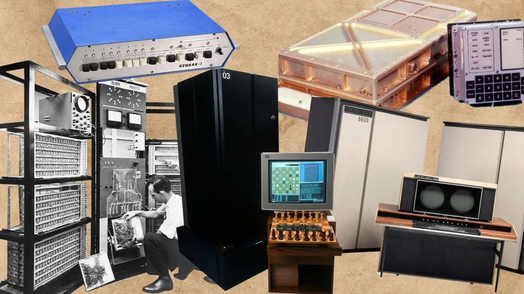

1.1 Historia y evolución de la computadora
Desde el ábaco hasta la inteligencia artificial, la computadora ha revolucionado nuestra forma de vivir. Inició con herramientas mecánicas y hoy nos permite explorar el universo digital.
 Ir a la página de contacto